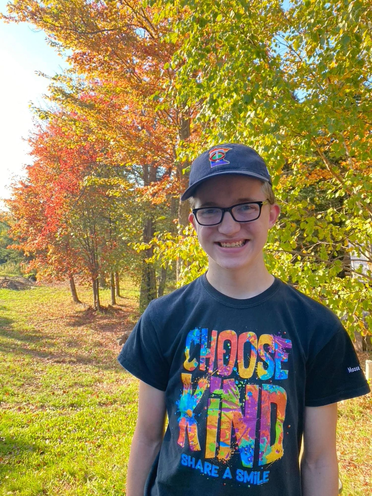

Obituary
The following obituary was published in the Moose Lake Star Gazette on August 10th, 2022.
Sebastien Jakob Blondo was born on July 14, 2005 at HCMC in Minneapolis, MN. Born first, he was the oldest twin and reminded his sibling whenever possible. In 2009, he and his family moved to Split Rock Township and in 2011, he started Kindergarten at Moose Lake Community School.
On August 6, 2022, Sebastien died in a fatal car accident on his way home from a weeklong camp with his grandparents and cousins. He was driving his new dream car, a 1995 Jeep XJ. His wishes to be a donor were honored and his gift will help others in need.
Sebastien will be remembered as an active, brilliant kid with a huge heart. He made friends wherever he went and his empathy shined when he met conflict. He accepted others as they are, and would want everyone to do the same. His phrase that he would want everyone to live by is “Be Kind”.
He was preceded in death by great grandparents; great aunts and uncles; cousin: Michael Jack, and his beloved pets. Sebastien is survived by his twin sibling: Jae; his younger brother: Ainsley; his parents: Steven and Elizabeth (Miesle) Blondo; grandparents: Richard and Greeta Ann (Kemp) Blondo and Daniel and Mary Alice (Stewart) Miesle; his aunts and uncles: Derek and Julie (Blondo) Nelson; Philip and Gráinne (Flynn) Miesle; Kathryn Miesle; Donald and Heather (Taylor) Miesle; Brent and Ellen (Miesle) Cummins; and Caroline Miesle; cousins: Isaiah Miesle; Ciara Miesle; Eóin Miesle; Elia Miesle; Zander Cummins; Mckinley Nelson; McCai Cummins; Kenna Nelson; and Jaelyn Nelson; and many friends.
There will be a visitation at Hope Lutheran, Moose Lake on Tuesday August 9, 2022. A Celebration of Life will be held outside (where Sebastien loved to be) at Moose Lake Community School Football Field on at 4 p.m. on Wednesday August 10, 2022.
Memorials in lieu of gifts can be sent to Legacy of Excellence Foundation of Moose Lake.
Arrangements by Hamlin-Hansen-Kosloski Funeral Home, Moose Lake.